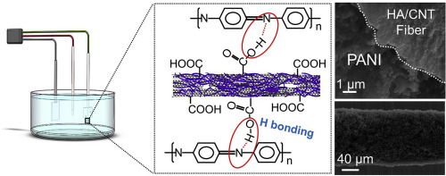

Journal Papers

2)
Polyaniline-decorated hyaluronic acid-carbon nanotube hybrid microfiber as a flexible supercapacitor electrode material
T. Zheng, X. Wang*, Y. Liu, R. Bayaniahangar, H. Li, C. Lu, N. Xu, Z. Yao, Y. Qiao, D. Zhang*, P.P.S.S Abadi*, Carbon 159, 65 (2020)

3)
Nanomaterials for Bone Tissue Regeneration: Updates and Future Perspectives
Michael J. Hill, Baowen Qi, Rasoul Bayani Ahangar, Vida Araban, Zahra Bakhtiary, Aram Shaaji, Michael R. Doschak, Brian Goh, Mohammadreza Shokouhimehre, Hojatollah Vali, John Presley, Amir A. Zadpoor, Mitchel B Harris*, Parisa P.S.S. Abadi*, Morteza Mahmoudi*, Nanomedicine 14, 22 (2019)
View Online

4)
Biocompatible Carbon Nanotube-based Hybrid Microfiber for Implantable Electrochemical Actuator and Flexible Electronic Applications
T. Zheng, P.P.S.S. Abadi, J. Seo, B. H. Cha, B. Miccoli, Y.C. Li, K. Park, S. Park, S. J. Choi, R. Bayaniahangar, D. Zhang, S. H. Lee, C. K. Lee, A. Khademhosseini, and S. R. Shin, ACS Applied Materials & Interfaces 11, 23 (2019)
5)
Engineering of Mature Human Induced Pluripotent Stem Cell-Derived Cardiomyocytes using Substrates with Multi-Scale Topography
P.P.S.S. Abadi, J. C. Garbern, S. Behzadi, M. J. Hill, J. S. Tresbeck, T. Heydari, M. R. Ejtehadi, N. Ahmed, E. Copley, H. Aghaverdi, R. T. Lee, O. C. Farokhzad, and M. Mahmoudi, Advanced Functional Materials 28, 19 (2018)
6)
pH-Responsive DNA Nanolinker Conjugated Hybrid Materials for Electrochemical Microactuator and Biosensor Applications
Y. A. Jodat, P. Lotfi, P.P.S.S. Abadi, J. Mun, J. Seo, E. Shin, S.M. Jung, C.K Lee, and S.R. Shin, ACS Applied Nano Materials 1, 6630 (2018)

7)
Chaotic printing: using chaos to fabricate densely packed micro- and nanostructures at high resolution and speed
G. Trujillo-de Santiago, M. Moisés Alvarez, M. Samandari, G. Prakash, G. Chandrabhatla, P. Inés Rellstab-Sánchez, B. Byambaa, P.P.S.S. Abadi, S. Mandla, R. K. Avery, A. Vallejo-Arroyo, A. Nasajpour, N. Annabi, Y. Shrike Zhang and A. Khademhosseini, Materials Horizons 5, 813 (2018)
8)
Flat Cell Culturing Surface May Cause Misinterpretation of Cellular Uptake of Nanoparticles
S. Behzadi, N. M. Vatan, K. Lema, D. Nwaobasi, I. Zenkov, P.P.S.S. Abadi, D. Ahmad Khan, C. Corbo, H. Aghaverdi, O. C. Farokhzad. M. Mahmoudi, Advanced Biosystems 2, 1800046 (2018)
9)
Mechanical Behavior of Carbon Nanotube Forests Grown with Plasma Enhanced Chemical Vapor Deposition: Pristine and Conformally-Coated
P.P.S.S. Abadi, M.R. Maschmann, S.L. Hodson, T.S. Fisher, J.W. Baur, S. Graham, and B.A. Cola, ASME Journal of Engineering Materials and Technology 139, 034502 (2017)
View PDF
10)
Reversible Tailoring of Mechanical Properties of Carbon Nanotube Forests by Immersing in Solvents
P.P.S.S. Abadi, M.R. Maschmann, S.M. Mortuza, S. Banerjee, J.W. Baur, S. Graham, and B.A. Cola, CARBON 69, 178 (2014)
11)
Deformation Response of Conformally-coated Carbon Nanotube Forests
P.P.S.S. Abadi, M.R. Maschmann, J.W. Baur, S. Graham, and B.A. Cola, Nanotechnology 24, 475707 (2013)
12)
Buckling-driven Delamination of Carbon Nanotube Forests
P.P.S.S. Abadi, S.B. Hutchens, J.R. Greer, B.A. Cola, and S. Graham, Applied Physics Letters 102, 223103 (2013)
13)
Post-growth microwave treatment to align carbon nanotubes
J.J. Nguyen, T.L. Bougher, P.P.S.S. Abadi, A. Sharma, S. Graham, and B.A. Cola, Journal of Micro and Nano-Manufacturing 1, 014501-1 (2013)
14)
Carbon nanotube thermal interfaces enhanced with sprayed on nanoscale polymer coatings
J.H. Taphouse, T.L. Bougher, V. Singh, P.P.S.S. Abadi, S. Graham, and B.A. Cola, Nanotechnology 24, 105401 (2013)
15)
Compressive Response of Vertically Aligned Carbon Nanotube Films Gleaned from in Situ Flat-punch Indentations
S. Pathak, N. Mohan, P.P.S.S. Abadi, S. Graham, B.A. Cola, and J.R. Greer, Journal of Materials Research 28, 984 (2013)
16)
Effects of Morphology on the Micro-compression Response of Carbon Nanotube Forests
P.P.S.S. Abadi, S.B. Hutchens, J.R. Greer, B.A. Cola, and S. Graham, Nanoscale 4, 3373 (2012)
17)
Higher Recovery and Better Energy Absorption at Faster Strain Rates in Carbon Nanotubes Bundles: an in-situ Study
S. Pathak, E.J. Lim, P.P.S.S. Abadi, B.A. Cola, S. Graham, and J.R. Greer, ACS Nano 6, 2189 (2012)

18)
Numerical Modeling of the Performance of Thermal Interface Materials in the Form of Paste-coated Sheets
P.P.S.S. Abadi and D.D.L. Chung, Journal of Electronic Materials 40, 1490 (2011)
19)
Factors that Govern the Performance of Thermal Interface Materials
P.P.S.S. Abadi, C.K. Leong, and D.D.L. Chung, Journal of Electronic Materials 38, 175 (2009)